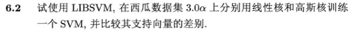
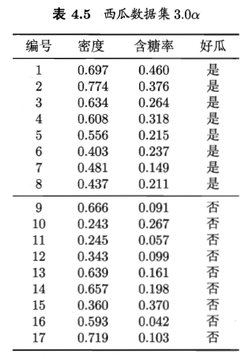
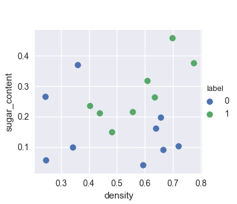
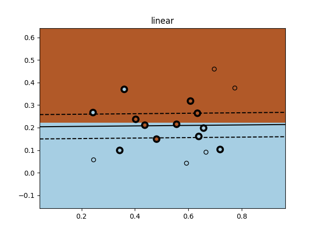
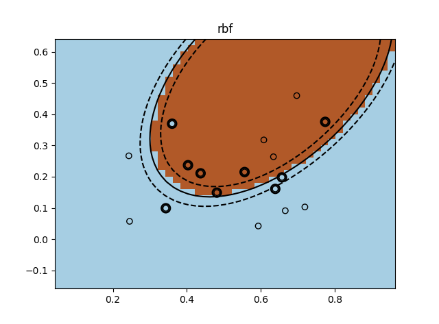

查看相关答案和源代码，欢迎访问我的Github：PY131/Machine-Learning_ZhouZhihua.


(注：本题实验基于python，另外，sklearn库已集成了libsvm库，并在其基础上扩展形成了自带svm工具库，这里我们采用该sklearn-svm工具库开展实验）
生成数据watermelon_3a.csv，将类别编码为 0（否），1（是），基于pandas读取数据，做出可视化界面如下：

采用sklearn.svm.svc训练并得出支持向量，实验段程序示意如下：
```python
from sklearn import svm
# initial
svc = svm.SVC(C=1000, kernel=kernel) # classifier 1 based on linear kernel
# train
svc.fit(X, y)
# get support vectors
sv = svc.support_vectors_
```
绘制出决策边界，同时标记出支持向量如下图：


可以估计出，面向该题数据集，高斯核函数的拟合更好（间隔更小），且用到的支持向量更少（当前参数设置下有9个支持向量）。
本文涉及的一些参考资料如下：